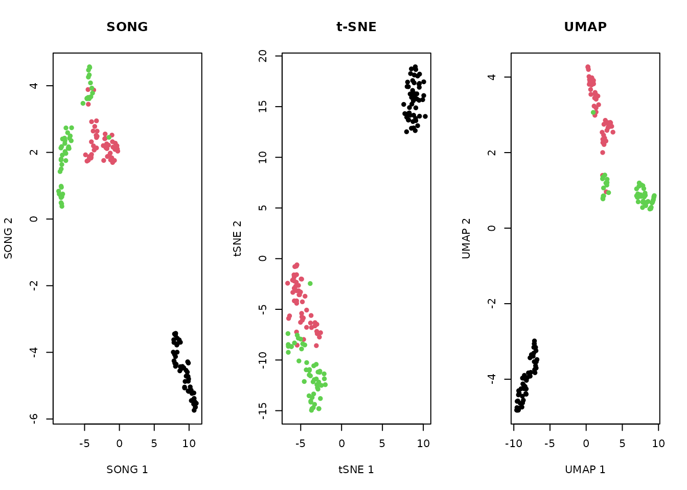

What is SONG?
The Self-Organizing Nebulous Growths (SONG) algorithm is a parametric method for nonlinear dimensionality reduction. Unlike t-SNE and UMAP, SONG supports incremental visualization: new data can be added to an existing embedding without reinitializing or retraining the model. SONG is also robust to noise and highly mixed clusters.
| Property | SONG | t-SNE | UMAP |
|---|---|---|---|
| Incremental updates | Yes | No | Limited |
| Parametric model | Yes (codebook) | No | Optional |
| Noise robustness | High | Low | Medium |
| Speed | Moderate | Slow | Fast |
| Deterministic | With seed | With seed | With seed |
The algorithm is described in:
Senanayake, D. A., Wang, W., Naik, S. H., & Halgamuge, S. (2021). Self-Organizing Nebulous Growths for Robust and Incremental Data Visualization. IEEE TNNLS, 32(10), 4588–4602.
Quick Start with Iris
library(songR)
model <- song(as.matrix(iris[, 1:4]), seed = 42, epochs = 20L)
#> Epoch 1/20 | CVs: 3 | QE: 1.5296 | so_lr: 1.0000 | lr: 1.0000
#> Epoch 2/20 | CVs: 5 | QE: 0.8782 | so_lr: 0.9876 | lr: 0.9500
#> Epoch 3/20 | CVs: 9 | QE: 0.5992 | so_lr: 0.9512 | lr: 0.9000
#> Epoch 4/20 | CVs: 16 | QE: 0.4691 | so_lr: 0.8936 | lr: 0.8500
#> Epoch 5/20 | CVs: 28 | QE: 0.3987 | so_lr: 0.8187 | lr: 0.8000
#> Epoch 6/20 | CVs: 28 | QE: 0.3752 | so_lr: 0.7316 | lr: 0.7500
#> Epoch 7/20 | CVs: 28 | QE: 0.3812 | so_lr: 0.6376 | lr: 0.7000
#> Epoch 8/20 | CVs: 28 | QE: 0.3555 | so_lr: 0.5420 | lr: 0.6500
#> Epoch 9/20 | CVs: 28 | QE: 0.3573 | so_lr: 0.4493 | lr: 0.6000
#> Epoch 10/20 | CVs: 28 | QE: 0.3492 | so_lr: 0.3633 | lr: 0.5500
#> Epoch 11/20 | CVs: 28 | QE: 0.3412 | so_lr: 0.2865 | lr: 0.5000
#> Epoch 12/20 | CVs: 28 | QE: 0.3356 | so_lr: 0.2204 | lr: 0.4500
#> Epoch 13/20 | CVs: 28 | QE: 0.3251 | so_lr: 0.1653 | lr: 0.4000
#> Epoch 14/20 | CVs: 28 | QE: 0.3210 | so_lr: 0.1209 | lr: 0.3500
#> Epoch 15/20 | CVs: 28 | QE: 0.3148 | so_lr: 0.0863 | lr: 0.3000
#> Epoch 16/20 | CVs: 28 | QE: 0.3114 | so_lr: 0.0601 | lr: 0.2500
#> Epoch 17/20 | CVs: 28 | QE: 0.3087 | so_lr: 0.0408 | lr: 0.2000
#> Epoch 18/20 | CVs: 28 | QE: 0.3076 | so_lr: 0.0270 | lr: 0.1500
#> Epoch 19/20 | CVs: 28 | QE: 0.3063 | so_lr: 0.0174 | lr: 0.1000
#> Epoch 20/20 | CVs: 28 | QE: 0.3048 | so_lr: 0.0110 | lr: 0.0500
#> Running UMAP dispersion step...
plot(model, color_by = iris$Species)
Working with the Bundled Dataset
data(songR_blobs)
model_blobs <- song(songR_blobs$data, seed = 42, epochs = 15L, verbose = FALSE)
plot(model_blobs, color_by = songR_blobs$labels)
Incremental Visualization
This is SONG’s key feature. We train on the first half of the data, then incrementally add the second half.
# Split data
data(songR_blobs)
n <- nrow(songR_blobs$data)
idx1 <- 1:(n / 2)
idx2 <- (n / 2 + 1):n
# Train on first half
model_v1 <- song(songR_blobs$data[idx1, ], seed = 42, epochs = 15L, verbose = FALSE)
# Update with second half
model_v2 <- update(model_v1, songR_blobs$data[idx2, ], epochs = 10L, verbose = FALSE)
par(mfrow = c(1, 2))
plot(model_v1$embedding, pch = 16, cex = 0.5,
col = rainbow(8)[as.integer(songR_blobs$labels[idx1])],
main = "Before update", xlab = "SONG 1", ylab = "SONG 2", bty = "n")
plot(model_v2$embedding, pch = 16, cex = 0.5,
col = rainbow(8)[as.integer(songR_blobs$labels[idx2])],
main = "After update", xlab = "SONG 1", ylab = "SONG 2", bty = "n")
The codebook grows to accommodate new data while preserving the existing embedding structure.
Predicting New Points
# Train on 90%, predict on 10%
train_idx <- 1:135
test_idx <- 136:150
model <- song(as.matrix(iris[train_idx, 1:4]), epochs = 15L, seed = 42,
verbose = FALSE)
new_coords <- predict(model, newdata = as.matrix(iris[test_idx, 1:4]))
# Plot training and test points together
plot(model$embedding[, 1], model$embedding[, 2],
col = "gray70", pch = 16, cex = 0.6,
xlab = "SONG 1", ylab = "SONG 2", main = "Training (gray) + Predicted (red)")
points(new_coords[, 1], new_coords[, 2], col = "red", pch = 17, cex = 1.2)
Comparison: SONG vs t-SNE vs UMAP
mat <- as.matrix(iris[, 1:4])
# SONG
song_model <- song(mat, seed = 42, epochs = 20L, verbose = FALSE)
# t-SNE
tsne_result <- Rtsne::Rtsne(mat, dims = 2, perplexity = 30,
verbose = FALSE, check_duplicates = FALSE)
# UMAP
umap_result <- uwot::umap(mat, n_neighbors = 15, verbose = FALSE)
par(mfrow = c(1, 3))
col <- as.integer(iris$Species)
plot(song_model$embedding, col = col, pch = 16, main = "SONG",
xlab = "SONG 1", ylab = "SONG 2")
plot(tsne_result$Y, col = col, pch = 16, main = "t-SNE",
xlab = "tSNE 1", ylab = "tSNE 2")
plot(umap_result, col = col, pch = 16, main = "UMAP",
xlab = "UMAP 1", ylab = "UMAP 2")
All three methods separate the Iris species, but only SONG supports incremental updates and retains a parametric codebook model.
Tuning Guide
| Parameter | Default | Description |
|---|---|---|
spread_factor |
0.5 | Growth threshold; higher = more coding vectors. Range: (0, 1). |
k |
3 | Neighborhood size. Must be >= d + 1. Lower = finer
topology. |
epsilon |
0.9 | Edge decay rate (0–1). Lower = sparser, faster-pruning graph. |
epochs |
50 | Number of self-organisation iterations. More = better convergence. |
alpha |
1.0 | Initial learning rate. |
a, b
|
1.577, 0.895 | Kernel shape parameters from the UMAP literature. |
dispersion |
TRUE | UMAP refinement step for visual cluster separation. |
The Codebook Model
SONG retains a codebook of coding vectors connected by a topology-preserving graph. This is what enables incremental updates and fast projection.
model <- song(as.matrix(iris[, 1:4]), seed = 42, epochs = 15L, verbose = FALSE)
summary(model)
#> SONG model summary
#> ==================
#> Input: 150 points in 4 dimensions
#> Coding vectors: 28
#> Compression ratio: 5.4:1
#> Edges: 48
#> Mean edge strength: 0.8365
#> Output dimensionality: 2
#> Epochs: 15 (max epochs)
#>
#> Parameters:
#> k = 3 | epsilon = 0.9 | spread_factor = 0.5
#> a = 1.577 | b = 0.895 | alpha = 1
plot(model, type = "graph", color_by = iris$Species)
Interactive Comparison App
For interactive exploration, launch the Shiny comparison app:
This opens a browser-based interface to compare SONG, t-SNE, and UMAP side-by-side on your own data.
Citation
citation("songR")
#> To cite the songR R package, use:
#>
#> Heller, R. (2026). songR: Self-Organizing Nebulous Growths for
#> Dimensionality Reduction. R package version 0.1.0.
#> https://github.com/cttir/songR
#>
#> To cite the underlying SONG algorithm, use:
#>
#> Senanayake, D. A., Wang, W., Naik, S. H., & Halgamuge, S. (2021).
#> Self-Organizing Nebulous Growths for Robust and Incremental Data
#> Visualization. IEEE Transactions on Neural Networks and Learning
#> Systems, 32(10), 4588-4602. doi:10.1109/TNNLS.2020.3023941
#>
#> To see these entries in BibTeX format, use 'print(<citation>,
#> bibtex=TRUE)', 'toBibtex(.)', or set
#> 'options(citation.bibtex.max=999)'.Use of LLM tools
Portions of this package were prepared with assistance from large
language model tooling for narrowly defined, non-authorial tasks:
copyediting, prose smoothing, Markdown/LaTeX formatting, scaffolding of
boilerplate files (CI configs, build scripts), code refactoring. The
tools used were Chat AI,
the LLM service of KISSKI (GWDG), and a self-hosted Mistral
Small (24B, Apache-2.0) run locally via Ollama and the ollamar R
package — local inference only, with no data sent to third parties for
the self-hosted model.
All scientific claims, methodological choices, analyses, interpretations, and conclusions are the author’s own. No LLM-generated text was incorporated without review and revision, and every reference was verified against its DOI, arXiv ID, or ISBN.
Session Info
sessionInfo()
#> R version 4.6.1 (2026-06-24)
#> Platform: x86_64-pc-linux-gnu
#> Running under: Ubuntu 24.04.4 LTS
#>
#> Matrix products: default
#> BLAS: /usr/lib/x86_64-linux-gnu/openblas-pthread/libblas.so.3
#> LAPACK: /usr/lib/x86_64-linux-gnu/openblas-pthread/libopenblasp-r0.3.26.so; LAPACK version 3.12.0
#>
#> locale:
#> [1] LC_CTYPE=C.UTF-8 LC_NUMERIC=C LC_TIME=C.UTF-8
#> [4] LC_COLLATE=C.UTF-8 LC_MONETARY=C.UTF-8 LC_MESSAGES=C.UTF-8
#> [7] LC_PAPER=C.UTF-8 LC_NAME=C LC_ADDRESS=C
#> [10] LC_TELEPHONE=C LC_MEASUREMENT=C.UTF-8 LC_IDENTIFICATION=C
#>
#> time zone: UTC
#> tzcode source: system (glibc)
#>
#> attached base packages:
#> [1] stats graphics grDevices utils datasets methods base
#>
#> other attached packages:
#> [1] songR_0.1.0
#>
#> loaded via a namespace (and not attached):
#> [1] vctrs_0.7.3 cli_3.6.6 knitr_1.51 rlang_1.3.0
#> [5] xfun_0.60 otel_0.2.0 S7_0.2.2 textshaping_1.0.5
#> [9] jsonlite_2.0.0 glue_1.8.1 Rtsne_0.17 htmltools_0.5.9
#> [13] ragg_1.5.2 sass_0.4.10 uwot_0.2.4 scales_1.4.0
#> [17] rmarkdown_2.31 grid_4.6.1 evaluate_1.0.5 jquerylib_0.1.4
#> [21] fastmap_1.2.0 yaml_2.3.12 lifecycle_1.0.5 FNN_1.1.4.1
#> [25] compiler_4.6.1 RColorBrewer_1.1-3 fs_2.1.0 Rcpp_1.1.2
#> [29] farver_2.1.2 systemfonts_1.3.2 lattice_0.22-9 digest_0.6.39
#> [33] R6_2.6.1 bslib_0.12.0 Matrix_1.7-5 gtable_0.3.6
#> [37] tools_4.6.1 ggplot2_4.0.3 pkgdown_2.2.1 cachem_1.1.0
#> [41] desc_1.4.3